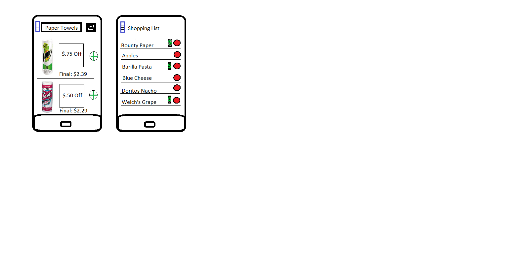

September 28, 2014
Efficiently saving money while shopping for groceries remains difficult. Coupons are laborious and rarely applicable to what you want.
Grocery shopping allows a lot of room for saving money if the shopper takes advantage of sales and coupons. Some shoppers that we interviewed intentionally looked for sales, but none used coupons because they did not want to put the effort into organizing that, or simply did not have time. We plan to make an app that will find coupons that are relevant to you, based on your current shopping list, and may suggest alternative purchases based on savings. We hope to make coupon usage effortless.
As a rough sketch, the app could have a list input feature where shoppers could build their usual shopping list, then find coupons for the specific item on their list. For example, if the user inputs “paper towels”, the app would show a $.75 off coupon for Bounty towels.
There are many potential features that could be included in this design. For instance, we could give users the option to specify brand preference and loyalty, and use this information to order coupon recommendation. We need identify to discuss with some users and among our team to decide which will be most beneficial.
To successfully answer these questions we need to effectively work together. Our team contract delineates the manner in which we will interact.